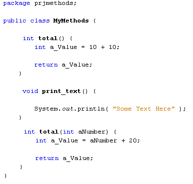
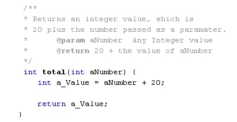
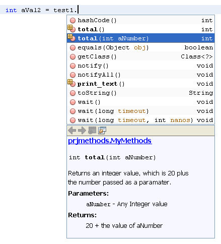
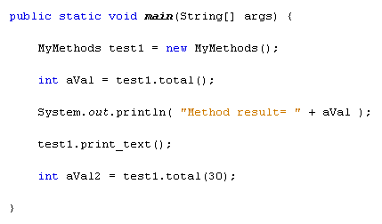
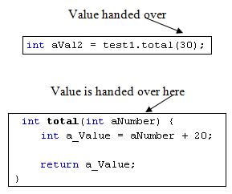
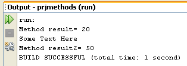

Passing Values to your Java Methods
You can pass values to your methods so that something can be done with this value. That value goes between the round brackets of the method.
Switch back to your MyMethods class. Now add the second of our total methods:

We now have two methods with the same name: total. The difference between the two is that this new one has a value between the round brackets. Java allows you to do this, and it is called method overloading. You can have as many methods with the same name as you want, with any return value. However, you can't have the same type of variables between the round brackets. So you can't have two total methods that return int values with both of them having int values between the round brackets. You can't do this, for example:
int total( int aNumber ) {
int a_Value = aNumber + 20;
return a_Value;
}
int total( int aNumber ) {
int a_Value = aNumber + 50;
return a_Value;
}
Although the two methods do different things, they have the same method headers.
Before you try out your new method, add some comments directly above the method:

You'll see what the comments do in a moment. But the param in the comments above is short for parameter. A parameter is the technical term for the value between the round brackets of your method headers. Our parameter is called aNumber, and it has an integer values. Note the use of the @ character before param and return.
All we're doing with the method itself is passing it an integer value and adding 20 to this passed value. The return value is the total of the two.
Now switch back to your code and add the following line:
int aVal2 = test1.total(30);
As soon as you type the dot after your test1 object, you'll see the popup list again. Your new total method will be on it. Click on the new method to highlight it and NetBeans will display the following:

The comments that we added are now displayed in the blue box underneath the list of methods. Anyone else coming across your method should be able to figure out what it does. The @param and @return lines from the comments are now filled out, and made bold.
But once you have added the total2 method, type the number 30 between the round brackets. Then type a semi-colon to end the line. You main method should now look like this:

The 30 between the round brackets of the new total method will be handed over and placed in the variable aNumber, which is in the round brackets of the method header:

Once you have handed the value over, the method can get to work.
Add a print line to your code:
System.out.println( "Method result2= " + aVal2 );
Then run your programme. The Output window should display the following:

So our new total method has added 30 to 20, and then returned the answer to the variable called aVal2.
In the next lesson, you'll learn how to pass more than one value over to your methods.